Guia do Quieux Linux
Tudo que você precisa para instalar, usar e gerenciar pacotes no Quieux Linux.
💿 Preparar a ISO
Antes de iniciar a instalação, você precisa gravar a ISO do Quieux Linux em um pendrive de pelo menos 8 GB. Escolha o método de acordo com seu sistema operacional:
Acesse rufus.ie e baixe a versão mais recente do Rufus. É uma ferramenta gratuita e não requer instalação.
Conecte seu pendrive (mínimo 8 GB) ao computador. Atenção: todos os dados do pendrive serão apagados.
Abra o Rufus e configure conforme abaixo:
- Dispositivo: selecione seu pendrive
- Seleção de boot: clique em Selecionar e escolha a ISO do Quieux
- Esquema de partição: MBR (recomendado para maioria dos PCs)
- Sistema de destino: BIOS ou UEFI-CSM
Clique em Iniciar, confirme o aviso de formatação e aguarde o processo concluir. Quando aparecer "Pronto", seu pendrive está preparado.
Conecte o pendrive e execute o comando abaixo para descobrir o identificador correto do dispositivo (ex: /dev/sdb):
Substitua /caminho/para/quieux.iso pelo caminho real da ISO e /dev/sdX pelo dispositivo do seu pendrive:
O processo pode levar alguns minutos. Quando o terminal retornar ao prompt, o pendrive está pronto.
🚀 Modo Live
Com o pendrive preparado, reinicie o computador e selecione o pendrive como dispositivo de boot (geralmente pela tecla F12, F2 ou Del durante a inicialização, dependendo do fabricante). O Quieux Linux iniciará no modo Live, permitindo que você experimente a distribuição sem instalar nada.
Ao entrar no modo Live, você verá a área de trabalho inicial do Quieux Linux:
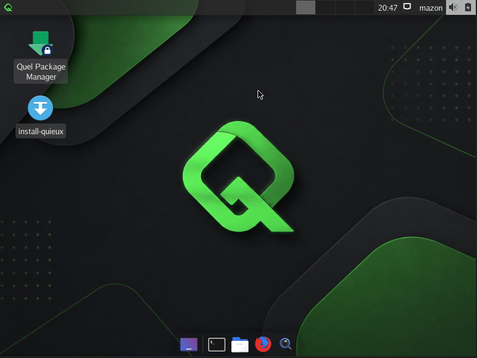
⚙️ Usando o Instalador
Para instalar o Quieux Linux no seu computador, siga os passos abaixo:
Na área de trabalho, clique duas vezes no atalho install-quieux para abrir o instalador.
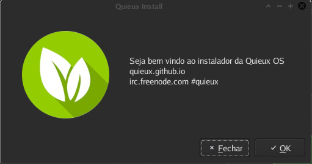
Após clicar em Ok, selecione o idioma e layout de teclado. Para o padrão brasileiro utilize:
- Linguagem:
pt_BR - Teclado:
br-abnt
Clique em Ok para prosseguir.
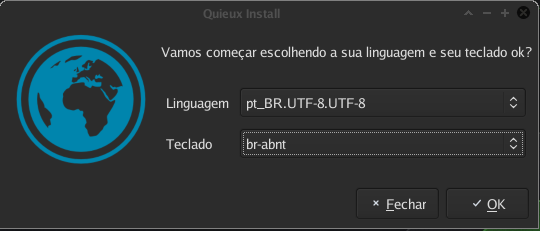
Preencha o nome de usuário e senha desejados e clique em Ok.
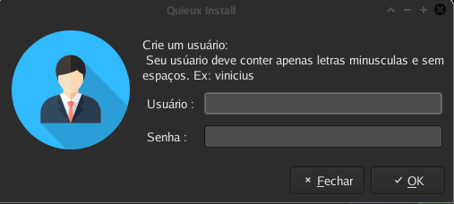
Selecione o HD ou SSD onde o Quieux Linux será instalado e clique em Automatic. O instalador irá criar e formatar as partições automaticamente.
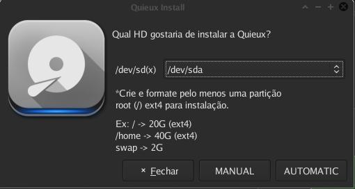
Uma tela de confirmação será exibida. Clique em Ok para continuar.
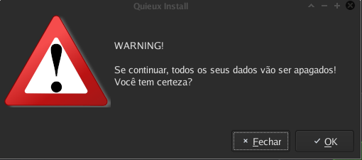
Mais uma tela de confirmação será exibida. Clique em Ok para dar início à instalação.
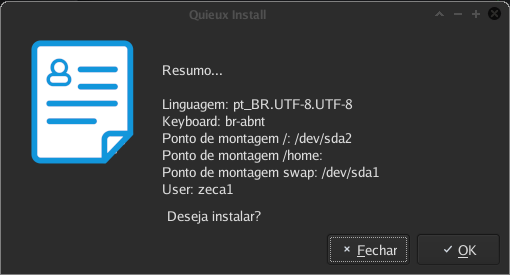
Após aguardar aproximadamente 10 minutos, uma tela perguntará sobre a instalação do GRUB (bootloader). Isso é fundamental caso o HD contenha apenas o Quieux Linux instalado. Recomenda-se prosseguir: selecione o mesmo HD onde o sistema foi instalado e clique em Ok.
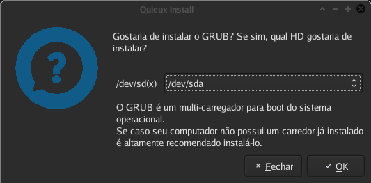
A instalação foi concluída com sucesso! Retire o pendrive do computador e reinicie para iniciar o Quieux Linux instalado. Bom uso! 🎉
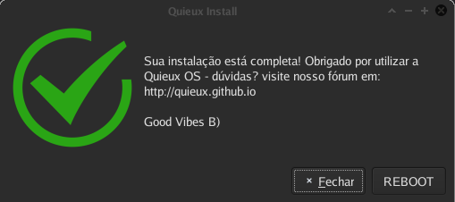
📦 Sobre o QUEL
O QUEL é o gerenciador de pacotes nativo do Quieux Linux. Com ele você pode instalar, remover e atualizar programas e o próprio sistema de forma simples e prática, tanto via terminal quanto pela interface gráfica.
🔐 Acesso Root
Após instalar o Quieux Linux, o comando quel e a interface gráfica devem ser usados apenas com privilégios de root para garantir a segurança do sistema. Para isso, abra o terminal e execute:
Quando solicitado, digite a senha root e pressione Enter. Você agora possui acesso administrativo ao sistema.
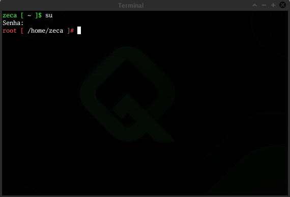
💻 Comandos do QUEL
Com o terminal em modo root, você pode gerenciar pacotes com os seguintes comandos:
🖥️ Interface Gráfica (quel-gtk)
Prefere uma interface visual? Execute o comando abaixo com acesso root para abrir o gerenciador gráfico do QUEL:
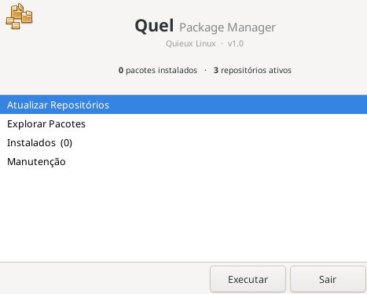
Após abrir a interface, siga esta ordem recomendada:
Clique em Atualizar repositórios para sincronizar a lista de pacotes disponíveis.
Clique em Manutenção e depois em Atualizar Quieux Linux. Caso o sistema já esteja na versão mais recente, prossiga para o próximo passo.
Clique em Explorar pacotes para visualizar e instalar os programas disponíveis no repositório.
🤝 Suporte e Contribuição
Ficou com alguma dúvida?
Não hesite em buscar ajuda. Nossa comunidade está pronta para te auxiliar. E se quiser contribuir, temos vagas abertas para testers e empacotadores!